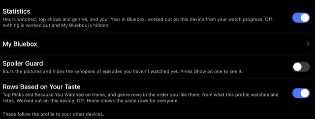

Privacy & security
Bluebox collects nothing. Here's what leaves your device, where your keys are kept, and how to report a security problem.
Nothing is collected#
- No analyticsNo crash reporting service and no Bluebox server.
- On your deviceYour library and progress stay here.
- Your own serverWith sync, they also go to your Supabase project, which only you control.
Who Bluebox talks to#
Only the services you use, for what they're for.
The full list
| Service | What it gets |
|---|---|
| TMDB or Cinemeta | Which titles you look at, to fetch artwork and details |
| Your add-ons | The IMDb ID of what you're about to play, to find releases |
| Your debrid service | Your API key and the releases you play or check |
| Torrent trackers and peers | Your IP address and the torrent you're streaming (see below) |
| Jellyfin, Emby, Plex, WebDAV | Your sign-in, and what you watch there, to keep progress in step |
| OpenSubtitles, Subdl, Podnapisi | The title and release name when you search for subtitles |
| TheIntroDB and IntroDB | The episode, to find intro and credits times (Community Intro Timestamps) |
| OMDb | The IMDb ID of a title page you open, for ratings |
| GitHub | A daily check for the latest release |
| Your Supabase project | Your library, if you set up sync |
Torrents and your IP address#
- Use debridA debrid service streams to you over HTTPS, so peers never see you.
- Or a VPNHides your address from peers.
- Stop uploadingSettings › Torrents & Debrid › Upload Limit › Don't Upload.
Technical details · The stream server
Bluebox uploads to other peers while you watch, unless you turn that off. Bluebox's stream server only listens on your own device.
Keys and passwords#
Keys, tokens and your sign-in are kept in the Keychain, never in settings files or logs. They don't sync unless you turn on Sync API Keys.
Technical details · Keys in detail
- API keys, debrid keys, server tokens, the links of add-ons added by link, and your sign-in are kept in one Bluebox Keychain item.
- For media servers and Plex, Bluebox signs in once and keeps only the access token, not your password. WebDAV needs the password itself, which is kept in the Keychain.
- Sync API Keys (off by default) warns that Supabase stores keys as plain text. Remove Keys from Server deletes them again.
- The debrid key goes to Torrentio, and to StremThru and Comet only with Share Key with Community Add-ons on.
- Exported logs leave out tokens and keys.
Feature switches#
Anything that could feel invasive has its own switch in Settings › Privacy & Features.

Technical details · Every switch
- Statistics (hours watched, Year in Bluebox) and Rows Based on Your Taste are worked out on the device.
- Spoiler Guard blurs pictures and hides synopses of episodes you haven't seen.
- Release Alerts asks your add-ons, every 12 hours at most, about films on My List that had nothing to play.
- Save Search History and Clear Search History.
- Allow Remote Control of This Device (off by default) and Use This Device as a Remote. These stay on each device: another device can't change what this one allows.
Account safety#
- Bluebox never signs in from a link, and asks before connecting to a server from a link.
- Only you can make an account on your server: setup turns sign-ups off once yours exists.
- Signing in to another account asks what happens to this device's library first.
Technical details · How accounts are kept apart
Automatic setup turns off sign-ups on your project once your account exists, so no one else can make an account with the public key in a connect link. Row level security on every table keeps each account to its own rows, and the remote and sync signal use private channels only your account can join. Turn off public Realtime to close the last gap.
Mac updates#
The built-in updater only installs a Bluebox signed by the same certificate as every release, and puts the old version back if anything's wrong.
Technical details · Certificate and checksum
The updater installs only a Bluebox signed with the Bluebox Open Source certificate (SHA-1 8DA48EE5DF68786C0B40A9D6689453892A1F75D0), checks the download against GitHub's checksum, and puts the old version back if the new one fails its check. You can check a download yourself.
Report a security problem#
Please report it privately, not in a public issue: on BCYAYAY14/bluebox, open the Security tab and choose Report a vulnerability.
Technical details · What to include
The Bluebox version (Settings › About) and platform, what an attacker needs, and steps to reproduce. You should hear back within a week. Only the latest release gets security fixes. Details are in SECURITY.md.
Your responsibility#
Bluebox is a player. It doesn't host or index anything; releases come from the add-ons and peers you choose. You're responsible for having the right to watch what you play.